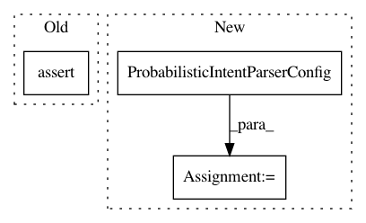

aa7a5124211456bf14340a7f0ea06e64af83c882,snips_nlu/tests/test_probabilistic_intent_parser.py,TestProbabilisticIntentParser,test_should_retrain_slot_filler_when_force_retrain,#TestProbabilisticIntentParser#,322
Before Change
with patch("snips_nlu.slot_filler.crf_slot_filler.CRFSlotFiller.fit") \
as mock_fit:
parser.fit(dataset, force_retrain=True)
self.assertEqual(2, mock_fit.call_count)
def test_should_not_retrain_slot_filler_when_no_force_retrain(self):
// Given
dataset_stream = io.StringIO(
After Change
// pylint:enable=unused-variable
parser_config = ProbabilisticIntentParserConfig(
intent_classifier_config="my_intent_classifier",
slot_filler_config="my_slot_filler"
)
parser = ProbabilisticIntentParser(parser_config)
slot_filler = MySlotFiller(None)
slot_filler.fit(dataset, "MakeCoffee")
parser.slot_fillers["MakeCoffee"] = slot_filler
In pattern: SUPERPATTERN
Frequency: 4
Non-data size: 3
Instances
Project Name: snipsco/snips-nlu
Commit Name: aa7a5124211456bf14340a7f0ea06e64af83c882
Time: 2019-01-17
Author: adrien.ball@snips.ai
File Name: snips_nlu/tests/test_probabilistic_intent_parser.py
Class Name: TestProbabilisticIntentParser
Method Name: test_should_retrain_slot_filler_when_force_retrain
Project Name: snipsco/snips-nlu
Commit Name: 50cbb019639a6146e31559329a677da1c5463c59
Time: 2017-11-29
Author: adrien.ball@snips.net
File Name: snips_nlu/tests/test_config.py
Class Name: TestConfig
Method Name: test_nlu_config_from_dict
Project Name: snipsco/snips-nlu
Commit Name: aa7a5124211456bf14340a7f0ea06e64af83c882
Time: 2019-01-17
Author: adrien.ball@snips.ai
File Name: snips_nlu/tests/test_probabilistic_intent_parser.py
Class Name: TestProbabilisticIntentParser
Method Name: test_should_not_retrain_slot_filler_when_no_force_retrain
Project Name: snipsco/snips-nlu
Commit Name: c18abcc72779987a43de35add51864a5143ba998
Time: 2018-01-18
Author: adrien.ball@snips.net
File Name: snips_nlu/tests/test_probabilistic_intent_parser.py
Class Name: TestProbabilisticIntentParser
Method Name: test_should_be_deserializable